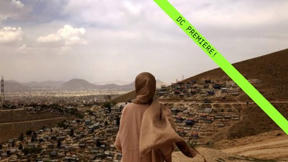

About the film
This story of intimate female friendship forged amidst America’s longest war is told by a filmmaker who spent fifteen years in and out of Afghanistan.
The battlefield lies behind the curtains of an Afghan home as Bibi Hajji struggles to survive the loss of her youngest child and the impact of a brother’s death on her remaining sons. A haunting image of that boy surviving a bullet wound prompted director Carol Dysinger to investigate: What happened to him? Who fired the shot? ONE BULLET evolves from procedural to an excavation of the human experience, of loss and redemption. It asks: how might we make peace across vast social, cultural, and religious divisions?
At the festival
- 2023 US Premiere · Sunday, November 5, 2023 · 4:00 PM · Martin Luther King, Jr. Memorial LibraryFollowed by post-screening discussion with director Carol Dysinger.
More films on these topics
 Killing AnnaSam Benstead2026 · 76 min
Killing AnnaSam Benstead2026 · 76 min Rehearsals for a RevolutionPegah Ahangarani2026 · 95 min
Rehearsals for a RevolutionPegah Ahangarani2026 · 95 min
The Secret Reading Club of KabulShakiba Adil, Elina Hirvonen2026 · 95 min The Lost Souls of SyriaStéphane Malterre2023 · 99 min
The Lost Souls of SyriaStéphane Malterre2023 · 99 min The Night DoctrineMauricio Rodriguez-Pons, Almudena Toral2023 · 16 min
The Night DoctrineMauricio Rodriguez-Pons, Almudena Toral2023 · 16 min RetrogradeMatthew Heineman2022 · 95 min
RetrogradeMatthew Heineman2022 · 95 min